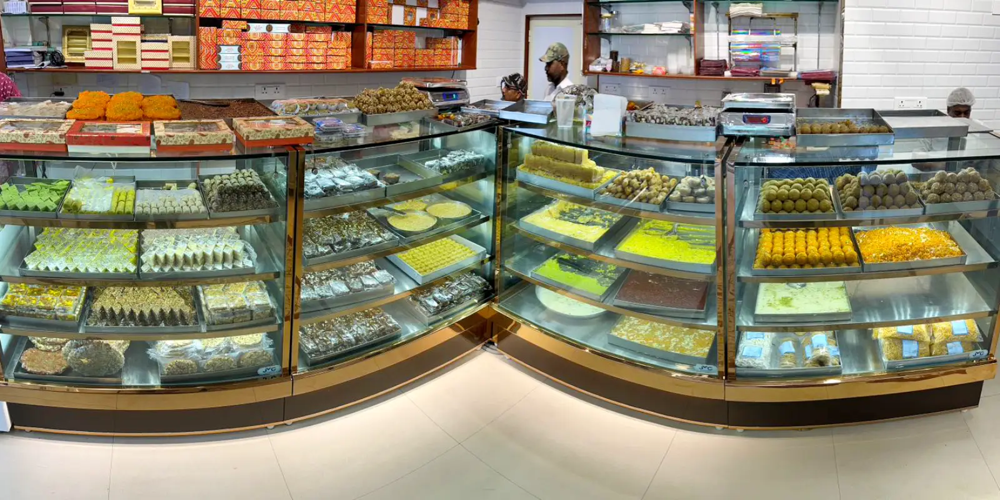
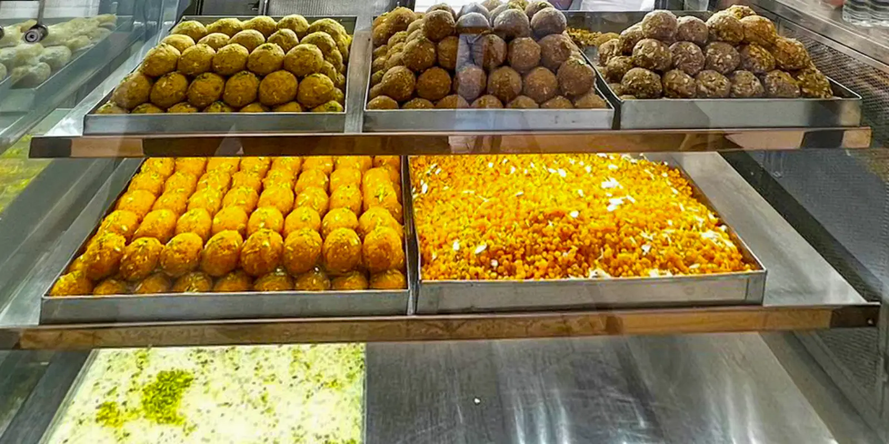
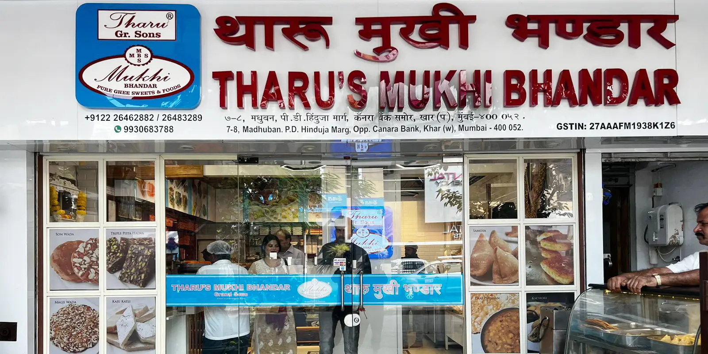
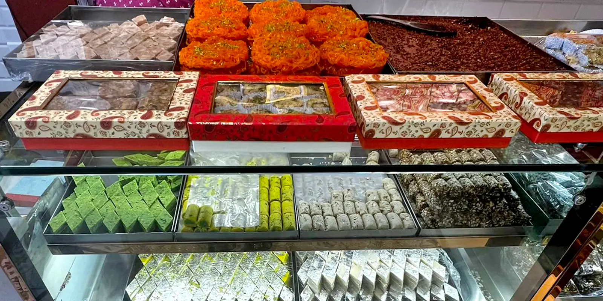

Establishing Nanu Tharu
1920
Our history goes back to the year 1920. In this year we had a flourishing business in Undivided India. The pioneer of our business is Seth Mukhi Tharu who discovered his interest in making and selling sweets in the pre-independence era. A journey of a thousand miles begins with a single step and his journey began at the ‘dakh bazaar’ in a small village of Shikarpur , situated in the Sindh province of Pakistan. We used to manufacture and sell sweets under the name “Nanu Tharu” along with our partner. Our shop was frequently visited by our community people.

Establishing Nanu Tharu
1920
Our history goes back to the year 1920. In this year we had a flourishing business in Undivided India. The pioneer of our business is Seth Mukhi Tharu who discovered his interest in making and selling sweets in the pre-independence era. A journey of a thousand miles begins with a single step and his journey began at the ‘dakh bazaar’ in a small village of Shikarpur , situated in the Sindh province of Pakistan. We used to manufacture and sell sweets under the name “Nanu Tharu” along with our partner. Our shop was frequently visited by our community people.


Mukhi Tharu @ Mumbadevi
1984

Mukhi Bhandar @ Khar
1980